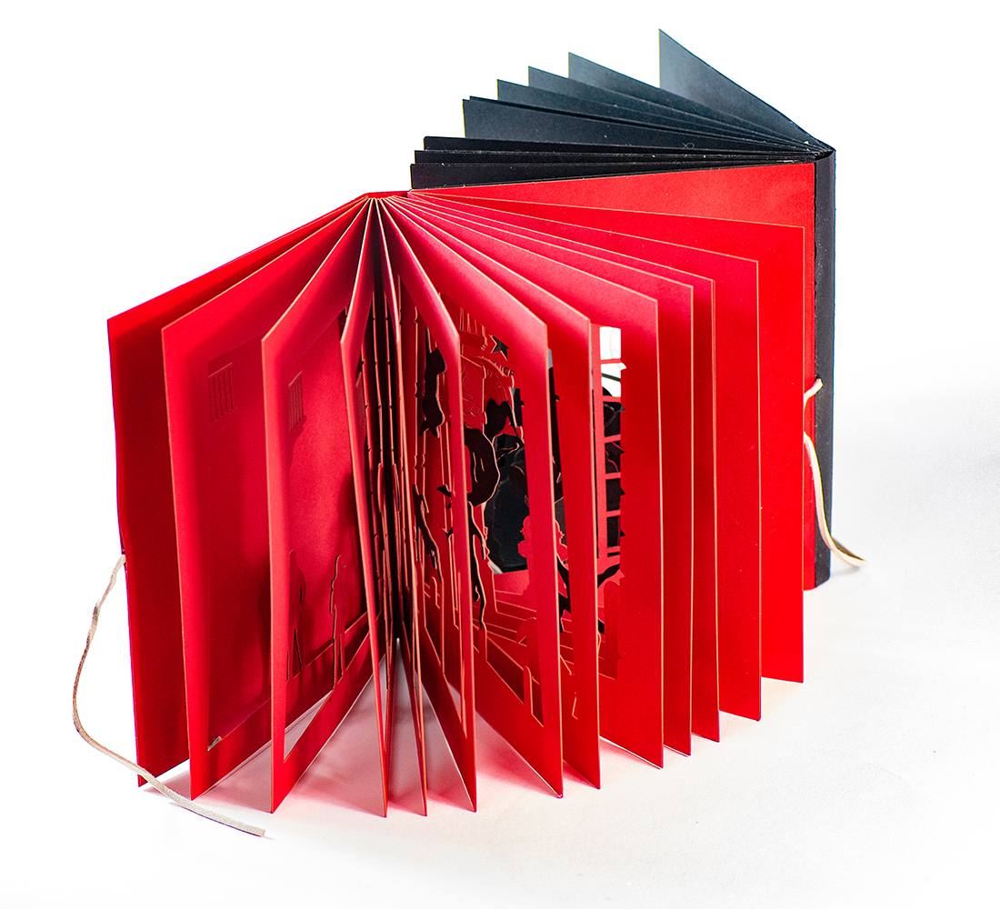
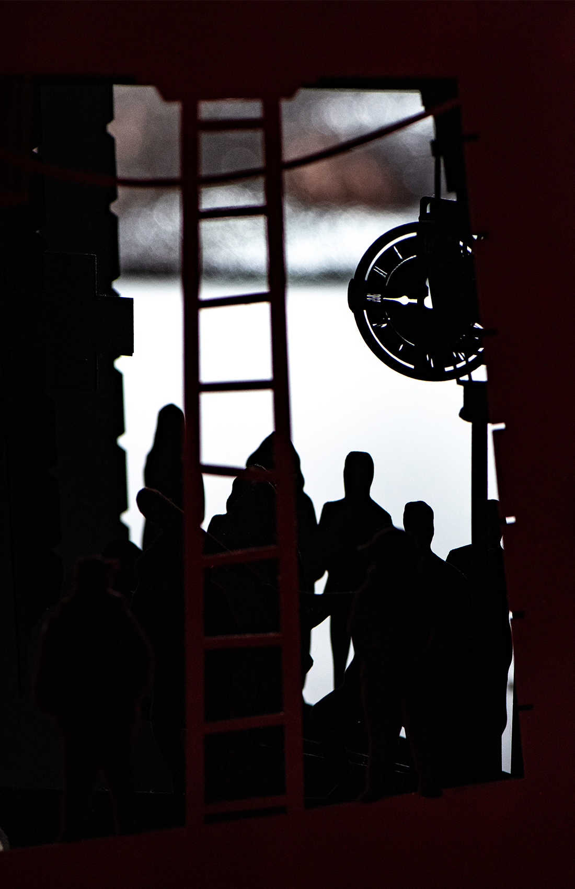

A travers
pour une lecture dédoublée

Un livre qui raconte la traversée d’une ville de deux points de vue différents, dans une narration ouverte à 360° qui se regarde. Les choix graphiques stylisant contribuent à la lecture du regard, par des silhouettes se détachant du décor, retraçant leurs mouvements dans les rues. J’ai d’abord exploré le potentiel graphique des silhouettes avec du papier découpé. Ces derniers se sont traduits en dessins vectoriels. La réalisation finale est un assemblage des pages réalisées à la découpe laser depuis ces fichiers.

Premier test au papier découpé

Façonnage à la découpe laser

livre ouvert - côté noir

Tranche - côté noir

livre ouvert - côté rouge
livre ouvert - côté rouge

Tranche - côté rouge n°01

Tranche - côté rouge n°02

Photo intérieur n°01

Photo intérieur n°02
Photo intérieur n°02
◯
◯
◯
◯
◯
◯
◯
◯
◯